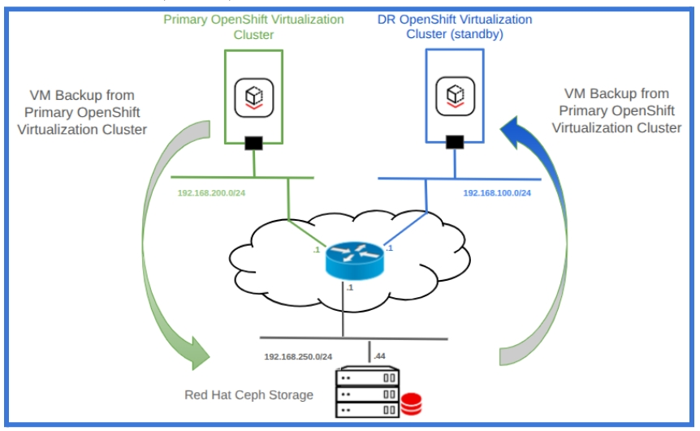
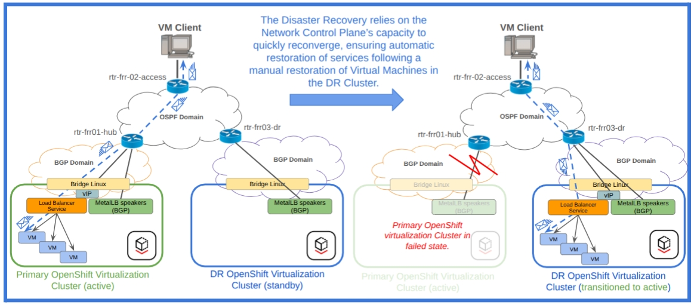

Implementing BGP Load Balancing infrastructure with MetalLB for OpenShift Virtualization
3. See the Solution in Action
3.1. Proof-of-Concept for BGP load balancer infrastructure
-
The infrastructure for this Proof-of-Concept is based on the network topology illustrated in Figure 7 and the configurations detailed in the addendum section located at the end of this document.
|
3.1.1. Initial situation
-
The virtual machine rhel8-server is running on hub-worker01.ocp4-hub.test.com, first worker node of the primary OpenShift Virtualization cluster (Figure 7), exposing the HTTP and SSH services via 192.11.1.100/32 External IP address advertised via MetalLB Layer 3 (BGP mode) to the external rtr-frr01-hub router.
[root@hub-ocp-bastion-server ~]# oc get vm NAME AGE STATUS READY rhel8-server 14d Running True [root@hub-ocp-bastion-server ~]# oc get pod -o wide NAME READY STATUS RESTARTS AGE IP NODE NOMINATED NODE READINESS GATES virt-launcher-rhel8-server-prl2q 2/2 Running 0 66m 10.128.2.13 hub-worker01.ocp4-hub.test.com <none> 1/1
[root@hub-ocp-bastion-server ~]# oc get endpoints rhel8-server-01-manual-svc NAME ENDPOINTS AGE rhel8-server-01-manual-svc 10.128.2.13:80,10.128.2.13:22 3m23
[root@hub-ocp-bastion-server ~]# oc get services NAME TYPE CLUSTER-IP EXTERNAL-IP PORT(S) AGE headless ClusterIP None <none> 5434/TCP 29d rhel8-server-01-manual-svc LoadBalancer 172.30.145.246 192.11.1.100 22000:31214/TCP,22080:31217/TCP 3m16s
Figure 7 - Environment for Proof-of-Concept on BGP load balancer infrastructure to support Disaster Recovery for OpenShift Virtualization

-
Based on the MetalLB configuration implemented during the initial setup of the primary OpenShift Virtualization cluster (please refer to the supplemental configuration details provided at the end of this document), the BGP speakers are running on the worker nodes:
[root@hub-ocp-bastion-server ~]# oc get nodes -l app=metallb-worker NAME STATUS ROLES AGE VERSION hub-worker01.ocp4-hub.test.com Ready BGPspeaker,worker 29d v1.32.8 hub-worker02.ocp4-hub.test.com Ready BGPspeaker,worker 29d v1.32.8 [root@hub-ocp-bastion-server ~]# oc get pods -o wide | grep -E 'worker01|worker02' | sort -k 7 frr-k8s-zmqsf 7/7 Running 0 7m34s 192.168.100.21 hub-worker01.ocp4-hub.test.com <none> <none> frr-k8s-9jzl9 7/7 Running 0 7m34s 192.168.100.22 hub-worker02.ocp4-hub.test.com <none> <none>
-
Both MalLB BGP speaker are advertising the 192.11.1.100/32 External IP address as Network Layer Reachability Information (NLRI) to the rtr-frr01-hub, as demonstrated in the details below related to the BGP speaker running on hub-worker01.ocp4-hub.test.com:
#------------------------------------ frr-k8s-zmqsf ------------------------------#
# BGP summary and routes advertised
IPv4 Unicast Summary (VRF default):
BGP router identifier 192.168.100.21, local AS number 65008 vrf-id 0
BGP table version 1
RIB entries 1, using 192 bytes of memory
Peers 1, using 725 KiB of memory
Neighbor V AS MsgRcvd MsgSent TblVer InQ OutQ Up/Down State/PfxRcd PfxSnt Desc
192.100.1.254 4 65008 3994 3993 0 0 0 01:06:28 0 1 N/A
Total number of neighbors 1
# BGP advertised routes
BGP table version is 1, local router ID is 192.168.100.21, vrf id 0
Default local pref 100, local AS 65008
Status codes: s suppressed, d damped, h history, * valid, > best, = multipath,
i internal, r RIB-failure, S Stale, R Removed
Nexthop codes: @NNN nexthop's vrf id, < announce-nh-self
Origin codes: i - IGP, e - EGP, ? - incomplete
RPKI validation codes: V valid, I invalid, N Not found
Network Next Hop Metric LocPrf Weight Path
*> 192.11.1.100/32 0.0.0.0 0 100 32768 i
Total number of prefixes 1
# Route-map with OUT direction (to the external router)
ip address prefix-list 192.100.1.254-pl-ipv4
seq 1 permit 192.11.1.100/32
# Route-map with IN direction (from the external router)
ip address prefix-list 192.100.1.254-inpl-ipv4
seq 1 deny any
-
As a result of the Network Layer Reachability Information (NLRI) associated with the external IP address 192.11.1.100/32, which is advertised by the MetalLB BGP speakers, the router rtr-frr01-hub (connected directly to the worker nodes of the Primary OpenShift Virtualization cluster) will recognize two equal-cost paths to reach the prefix 192.11.1.100/32:
rtr-frr01-hub# show ip route bgp
Codes: K - kernel route, C - connected, L - local, S - static,
R - RIP, O - OSPF, I - IS-IS, B - BGP, E - EIGRP, N - NHRP,
T - Table, A - Babel, F - PBR, f - OpenFabric,
t - Table-Direct,
> - selected route, * - FIB route, q - queued, r - rejected, b - backup
t - trapped, o - offload failure
IPv4 unicast VRF default:
B> 192.11.1.100/32 [200/0] via 192.100.1.221 (recursive), weight 1, 01:21:15
* via 192.100.1.221, eth1 onlink, weight 1, 01:21:15
via 192.100.1.222 (recursive), weight 1, 01:21:15
* via 192.100.1.222, eth1 onlink, weight 1, 01:21:15
-
The prefix 192.11.1.100/32, learned via iBGP, will be sequentially redistributed by the rtr-frr01-hub router into the OSPF routing protocol and advertised to the rtr-frr02-access as an External E2 route.
rtr-frr02-access# show ip ospf database external
OSPF Router with ID (99.100.2.2)
AS External Link States
LS age: 153
Options: 0x2 : *|-|-|-|-|-|E|-
LS Flags: 0x6
LS Type: AS-external-LSA
Link State ID: 192.11.1.100 (External Network Number)
Advertising Router: 99.100.1.1
LS Seq Number: 80000001
Checksum: 0xe3db
Length: 36
Network Mask: /32
Metric Type: 2 (Larger than any link state path)
TOS: 0
Metric: 20
Forward Address: 192.100.1.221
External Route Tag: 0
rtr-frr02-access# show ip route ospf
Codes: K - kernel route, C - connected, L - local, S - static,
R - RIP, O - OSPF, I - IS-IS, B - BGP, E - EIGRP, N - NHRP,
T - Table, A - Babel, F - PBR, f - OpenFabric,
t - Table-Direct,
> - selected route, * - FIB route, q - queued, r - rejected, b - backup
t - trapped, o - offload failure
IPv4 unicast VRF default:
O>* 192.11.1.100/32 [110/20] via 199.10.1.254, eth0, weight 1, 00:02:49
O>* 192.100.1.0/24 [110/20] via 199.10.1.254, eth0, weight 1, 00:12:08
O 192.111.100.0/24 [110/10] is directly connected, eth2, weight 1, 00:12:55
O 192.168.150.0/24 [110/10] is directly connected, eth1, weight 1, 00:12:55
O>* 192.200.1.0/24 [110/20] via 199.10.1.252, eth0, weight 1, 00:12:08
O 199.10.1.0/24 [110/10] is directly connected, eth0, weight 1, 00:12:08
-
Performing a basic end-to-end test, “VM Client” acting as application consumer connected to the rtr-frr03-access router was able to connect to the HTTP test service hosted on the virtual Machine rhel8-server, which is currently running on hub-worker01.ocp4-hub.test.com (a worker node within the Primary OpenShift Virtualization cluster).
[admin@vm-server ~]$ tracepath -m8 192.11.1.100
1?: [LOCALHOST] pmtu 1500
1: rtr-frr02-access 0.448ms
1: rtr-frr02-access 0.240ms
2: rtr-frr01-hub 0.696ms
3: primary-ocp-worker02 1.214ms
…. omitted …
[admin@vm-server ~]$ curl -Is http://192.11.1.100:22080 | head -n 1
HTTP/1.1 200 OK
[admin@vm-server ~]$
3.1.2. Recovery prerequisite
-
The availability of the latest full backup, or point-in-time (PIT) backups if applicable, of the virtual machine resources associated with rhel8-server stored externally from the primary OpenShift Virtualization cluster, along with the ability to restore these resources in the disaster recovery (DR) OpenShift Virtualization environment, is a prerequisite for this demonstration, as illustrated in Figure 8.
-
In this context, OpenShift-ADP was utilized to create a full backup of the rhel8-server virtual machine from the primary OpenShift Virtualization cluster and to restore it within the DR OpenShift Virtualization environment during the recovery process described below.
# cat backup-vm-bgp-datamover.yaml
apiVersion: velero.io/v1
kind: Backup
metadata:
name: vm-gvp-namespace-backup
namespace: openshift-adp
spec:
snapshotMoveData: true
includedNamespaces:
- vm-bgp
storageLocation: dpa-ocp-virt-1
[root@hub-ocp-bastion-server ocp-script-yaml-dr]# oc create -f backup-vm-bgp-datamover.yaml
backup.velero.io/vm-gvp-namespace-backup created
[root@hub-ocp-bastion-server ~]# velero backup get -n openshift-adp
NAME STATUS ERRORS WARNINGS CREATED EXPIRES STORAGE LOCATION SELECTOR
vm-gvp-namespace-backup Completed 0 0 2025-10-25 04:04:29 -0400 EDT 29d dpa-ocp-virt-1 <none>
Figure 8 - S3 Infrastructure to support Virtual Machine Backup & Restore via OpenShift APIs for Data Protection (OADP)

3.1.3. Primary cluster isolation
-
After isolating the Primary OpenShift Virtualization environment (which involved disabling the external router interface, as indicated in Figure 9), the VM client experiences a loss of connectivity towards the external IP address of the virtual machine rhel8-server.
[admin@vm-server ~]$ tracepath -m8 192.11.1.100 1?: [LOCALHOST] pmtu 1500 1: rtr-frr02-access 0.527ms 1: rtr-frr02-access 0.352ms 2: no reply 3: no reply 4: no reply 5: no reply 6: no reply 7: no reply 8: no reply
-
The external IP address of the virtual machine rhel8-server will be accessible again once the restoration procedures are completed and the OSPF and BGP protocols have reconverged to direct traffic to the DR OpenShift Virtualization cluster.
Figure 9 - Virtual Machine fail over on DR OpenShift Virtualization Clusters

3.1.4. Restore process on DR cluster
-
Following the completion of the restore process on the DR OpenShift Virtualization cluster, the virtual machine rhel8-server has been successfully restored and reassigned to the same external IP address previously utilized in the primary cluster:
# cat restore-vm-bgp-datamover.yaml
apiVersion: velero.io/v1
kind: Restore
metadata:
name: vm-gvp-namespace-restore
namespace: openshift-adp
spec:
backupName: vm-gvp-namespace-backup
restorePVs: true
[root@dr-ocp-bastion-server ~]# oc create -f restore-vm-bgp-datamover.yaml
restore.velero.io/vm-gvp-namespace-restore created
[root@dr-ocp-bastion-server ~]# velero get restores -n openshift-adp NAME BACKUP STATUS STARTED COMPLETED ERRORS WARNINGS CREATED SELECTOR vm-gvp-namespace-restore vm-gvp-namespace-backup Completed 2025-10-25 05:06:14 -0400 EDT 2025-10-25 05:13:23 -0400 EDT 0 15 2025-10-25 05:06:14 -0400 EDT <none>
[root@dr-ocp-bastion-server ~]# oc project vm-bgp Now using project "vm-bgp" on server "https://api.ocp4-dr.test.com:6443". [root@dr-ocp-bastion-server ~]# oc get vm NAME AGE STATUS READY rhel8-server 8m5s Running True [root@dr-ocp-bastion-server ~]# oc get service NAME TYPE CLUSTER-IP EXTERNAL-IP PORT(S) AGE headless ClusterIP None <none> 5434/TCP 9m49s rhel8-server-01-manual-svc LoadBalancer 172.31.111.216 192.11.1.100 22000:31214/TCP,22080:31217/TCP 9m49s
3.1.5. External IP address reachability restored
-
Restoring the virtual machine objects in the Disaster Recovery OpenShift Virtualization cluster, the External IP Address 192.11.1.100/32 is now being re-advertised, this time towards rtr-frr03-dr (the router connected to the DR OpenShift Virtualization cluster).
rtr-frr03-dr# show ip bgp sum IPv4 Unicast Summary: BGP router identifier 99.100.3.3, local AS number 65008 VRF default vrf-id 0 BGP table version 4 RIB entries 5, using 640 bytes of memory Peers 2, using 47 KiB of memory Peer groups 1, using 64 bytes of memory Neighbor V AS MsgRcvd MsgSent TblVer InQ OutQ Up/Down State/PfxRcd PfxSnt Desc 192.200.1.221 4 65008 5907 5908 4 0 0 01:38:22 1 2 N/A 192.200.1.222 4 65008 5912 5915 4 0 0 01:38:17 1 2 N/A Total number of neighbors 2
rtr-frr03-dr# show ip route bgp
Codes: K - kernel route, C - connected, L - local, S - static,
R - RIP, O - OSPF, I - IS-IS, B - BGP, E - EIGRP, N - NHRP,
T - Table, A - Babel, F - PBR, f - OpenFabric,
t - Table-Direct,
> - selected route, * - FIB route, q - queued, r - rejected, b - backup
t - trapped, o - offload failure
IPv4 unicast VRF default:
B> 192.11.1.100/32 [200/0] via 192.200.1.221 (recursive), weight 1, 00:07:27
* via 192.200.1.221, eth1 onlink, weight 1, 00:07:27
via 192.200.1.222 (recursive), weight 1, 00:07:27
* via 192.200.1.222, eth1 onlink, weight 1, 00:07:27
-
The topology modification resulting from the restoration of virtual machine objects within the DR OpenShift Virtualization cluster has caused reconvergence of the OSPF instance operating on rtr-frr02-access.
-
The External IP Address is now accessible via the rtr-frr03-dr router connected to the DR OpenShift Virtualization cluster.
rtr-frr02-access# show ip ospf database external
OSPF Router with ID (99.100.2.2)
AS External Link States
LS age: 27
Options: 0x2 : *|-|-|-|-|-|E|-
LS Flags: 0x6
LS Type: AS-external-LSA
Link State ID: 192.11.1.100 (External Network Number)
Advertising Router: 99.100.3.3
LS Seq Number: 80000002
Checksum: 0x7cd9
Length: 36
Network Mask: /32
Metric Type: 2 (Larger than any link state path)
TOS: 0
Metric: 20
Forward Address: 192.200.1.221
External Route Tag: 0
rtr-frr02-access# show ip route ospf
Codes: K - kernel route, C - connected, L - local, S - static,
R - RIP, O - OSPF, I - IS-IS, B - BGP, E - EIGRP, N - NHRP,
T - Table, A - Babel, F - PBR, f - OpenFabric,
t - Table-Direct,
> - selected route, * - FIB route, q - queued, r - rejected, b - backup
t - trapped, o - offload failure
IPv4 unicast VRF default:
O>* 192.11.1.100/32 [110/20] via 199.10.1.252, eth0, weight 1, 00:00:30
O>* 192.100.1.0/24 [110/20] via 199.10.1.254, eth0, weight 1, 00:16:59
O 192.111.100.0/24 [110/10] is directly connected, eth2, weight 1, 00:17:46
O 192.168.150.0/24 [110/10] is directly connected, eth1, weight 1, 00:17:46
O>* 192.200.1.0/24 [110/20] via 199.10.1.252, eth0, weight 1, 00:16:59
O 199.10.1.0/24 [110/10] is directly connected, eth0, weight 1, 00:16:59
rtr-frr02-access#
-
After the network reconvergence and as the final outcome of the recovery process, the VM Client restores connectivity to the RHEL8 server operating on DR OpenShift Virtualization through the rtr-frr03-dr router (Figure 9):
[admin@vm-server ~]$ tracepath -m8 192.11.1.100
1?: [LOCALHOST] pmtu 1500
1: rtr-frr02-access 0.347ms
1: rtr-frr02-access 0.216ms
2: rtr-frr03-dr 0.709ms
3: dr-ocp-worker02 1.088ms
… omitted …
[admin@vm-server ~]$ curl -Is http://192.11.1.100:22080 | head -n 1
HTTP/1.1 200 OK
[admin@vm-server ~]$